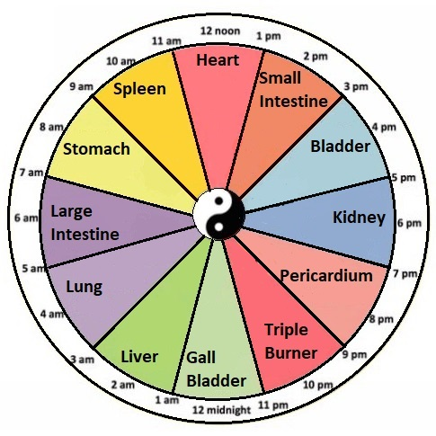

The Active Meridian Points
One key point for each two-hour meridian window, targeted to your destination time to help your body shift.
JetLagPro selects the meridian that is active at your destination time and shows you the best point for your seat.
The Chinese Organ Clock in Everyday Terms
Chinese medicine describes a 24-hour cycle where different organ systems take turns being "on duty." Each two-hour window is linked to a specific active meridian. For each of these twelve meridians, there is one ideal point (the "horary point").
> JetLagPro uses the same clock, but includes optional alternative points you can realistically reach during a flight.
The app uses this clock, set to the destination time , to pick the corrrect meridian. For example, if it's 3:00 PM where you are but 8:00 PM at your destination, it uses the 8:00 PM meridian.
The Chinese Organ Clock Wheel

The wheel shows the 24-hour day divided into twelve two-hour slices. Each slice belongs to one meridian and has a single key point that JetLagPro uses for that active window.
Standard vs Cramped-Seating Points
Five of the ideal points are on the feet or behind the knees. On an airplane, especially in a cramped economy seat, those spots can be hard or awkward to reach.
JetLagPro always focuses on the active meridian and time window, but with Cramped seating turned on, the app switches to more accessible points on that meridian. You still get the benefit regardless.